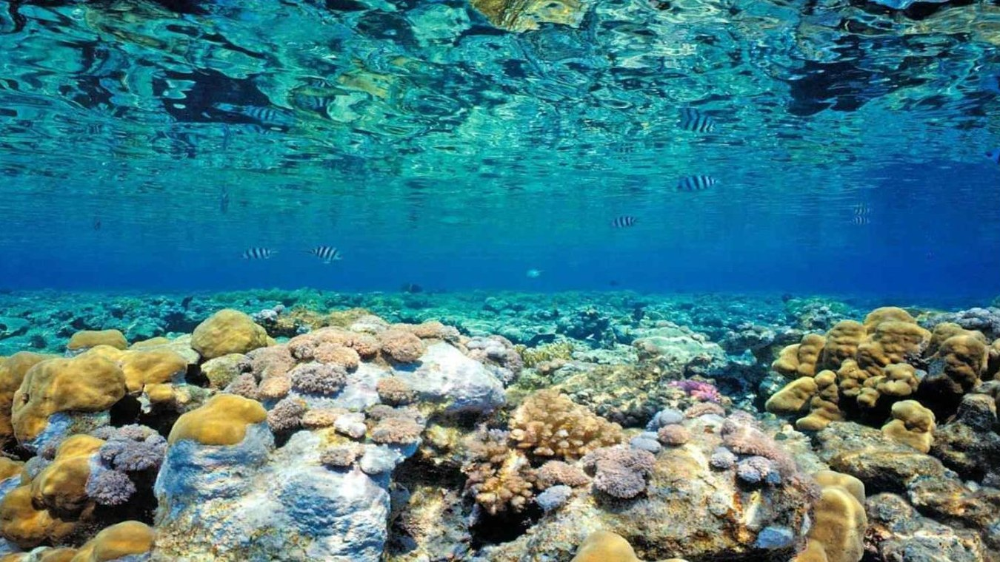

KKL dapat melindungi ikan – dan satwa dan fauna laut lainnya – yang terancam kelangsungannya akibat plastik, pestisida, dan racun yang mencemari laut. Ketika ikan minum racun yang dilepaskan oleh plastik yang dibuang sembarangan, racun itu masuk ke dalam rantai makanan dan membahayakan satwa dan manusia. Namun, dengan KKL,sejumlah kawasan laut punya peluang terbebas dari sisa plastik, sehingga memungkinkan habitat laut dan spesies di sekitarnya pulih dan berkembang.
Opening hours: everyday from 6am to 5pm.
Address: 15 Adr street, 5015, NY